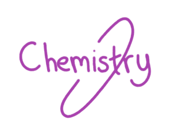
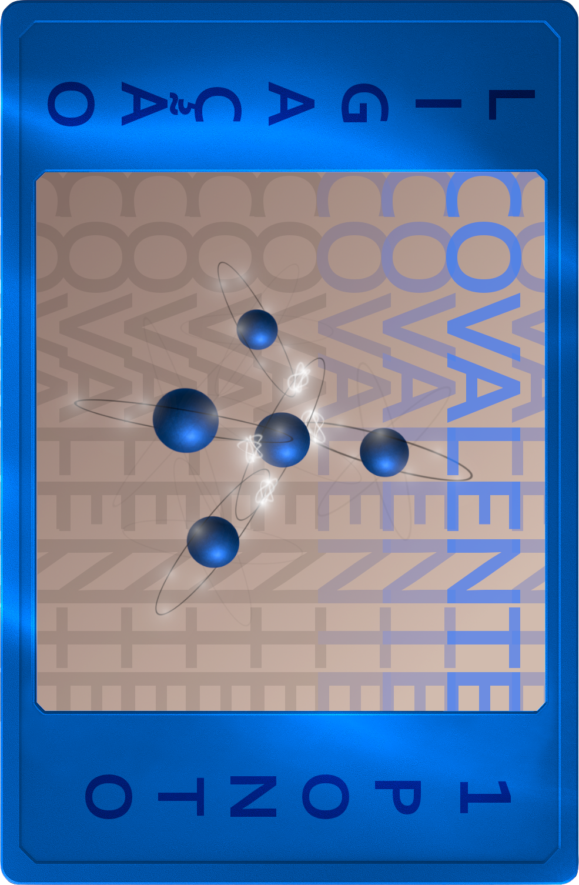

O Jogo de Cartas
Sobre o Jogo:
Chemistry é um jogo de cartas por turnos sobre química, cujo objetivo é acumular pontos a partir da formação de moléculas. A proposta do jogo é estimular os jogadores a aprender química de forma simples e divertida.
Jogadores:
2
O baralho possui 133 cartas, sendo:
- 72 cartas de elementos;
- 33 cartas de ligação;
- 21cartas de multiplicação;
- 7 cartas de gases nobres.
Cartas

Cartas de Elemento:
São a base do jogo: o número de elétrons em sua camada de valência determina a pontuação. Esses serão os pontos que determinarão o vencedor ao fim do jogo. Essas cartas são divididas em metais e ametais.

Cartas de Ligação:
Permitem formar moléculas, com três tipos de ligação: covalente (+1 ponto), iônica (+2 pontos) e metálica (+3 pontos). A pontuação final da molécula é a soma dos pontos dos elementos + pontos da ligação. Para formar uma molécula válida: use a ligação correta entre átomos diferentes e respeite a quantidade necessária de ligações.

Cartas de Multiplicação:
Auxiliam na criação de moléculas grandes, que exigem muitos átomos. Não somam pontos, apenas permitem ao jogador obter átomos extras. Disponíveis em: 2x, 3x e 4x.
Cartas Especiais
No jogo, há um total de 7 cartas especiais, todas identificadas como gases nobres. Cada uma é única e possui habilidades exclusivas, que podem ser passivas ou ativas.
Como ilustrado na imagem, as cartas especiais apresentam as seguintes características: coloração roxa, descrição da habilidade na parte inferior e especificação das condições de uso quando aplicáveis.
-Regras do jogo-
Início do Jogo:
Os jogadores devem decidir por qualquer método de sua preferência quem iniciará a partida. O jogador escolhido seleciona sua Carta Especial primeiro. Em seguida, o outro jogador faz sua escolha.
Após isso, separe todas as cartas de ligação e embaralhe os montes de cartas separadamente. Cada jogador compra 5 cartas para formar sua mão inicial: 3 cartas padrões e 2 cartas de ligação (a não ser que uma carta especial diga o contrário).
Com as mãos formadas, o jogo tem início oficialmente.
Turnos:
O jogo funciona por turnos. Cada jogador recebe 3 energias por turno para realizar ações, que são gastas conforme a tabela:
| Interação |
Custo |
| Jogar carta avulsa |
1 energia |
| Jogar uma carta em uma molécula |
Nenhuma energia |
| Comprar uma carta de elemento |
1 energia |
| Comprar uma carta de ligação |
2 energias |
| Descartar uma carta |
1 energia |
| Usar Carta Especial |
*Variável |
Jogando:
No início do jogo, os jogadores seguirão a mesma ordem usada na escolha das cartas especiais. No início do primeiro turno, o primeiro jogador usa suas energias para realizar ações. Assim que terminar, passa a vez para o próximo jogador. A sequência se repete até o final da partida.
Ao fim do jogo, somente moléculas completas (com 2+ elementos) são pontuadas e cada carta remanescente na sua mão reduz 1 ponto do seu total.
Vence aquele cuja soma dos pontos for a maior.